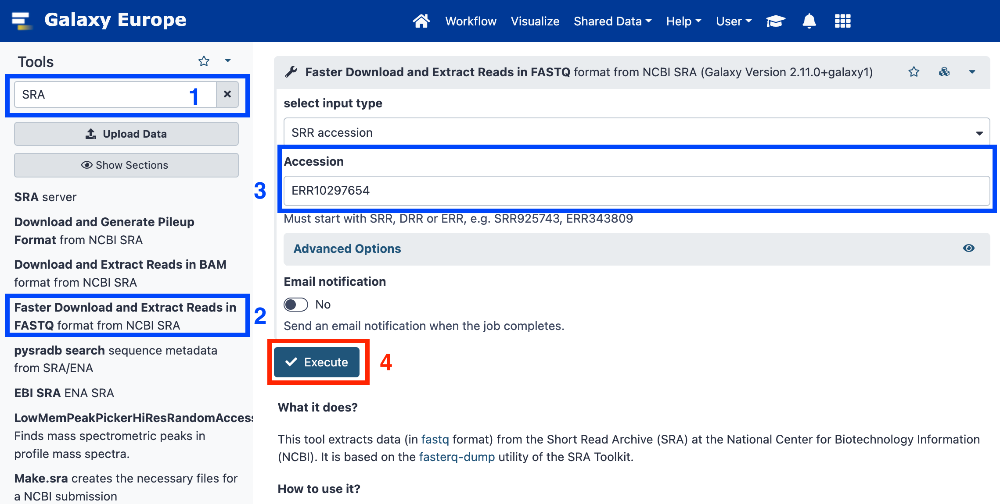
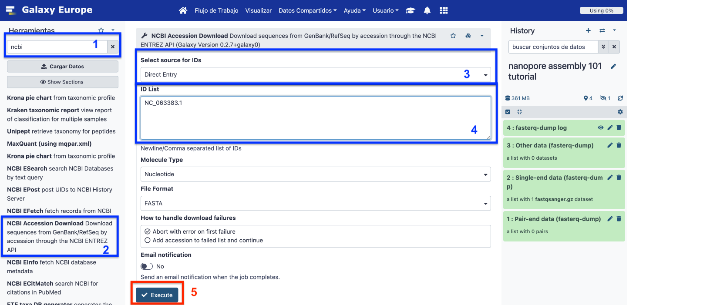
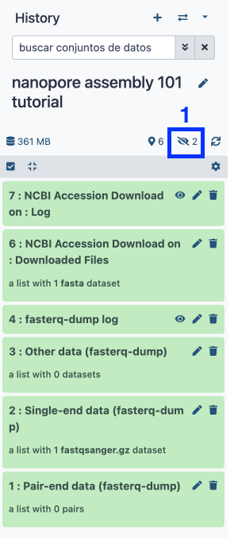
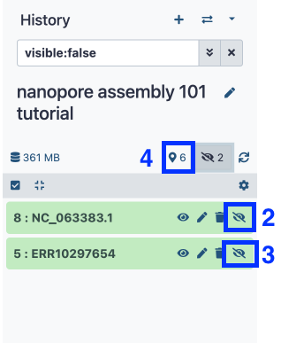
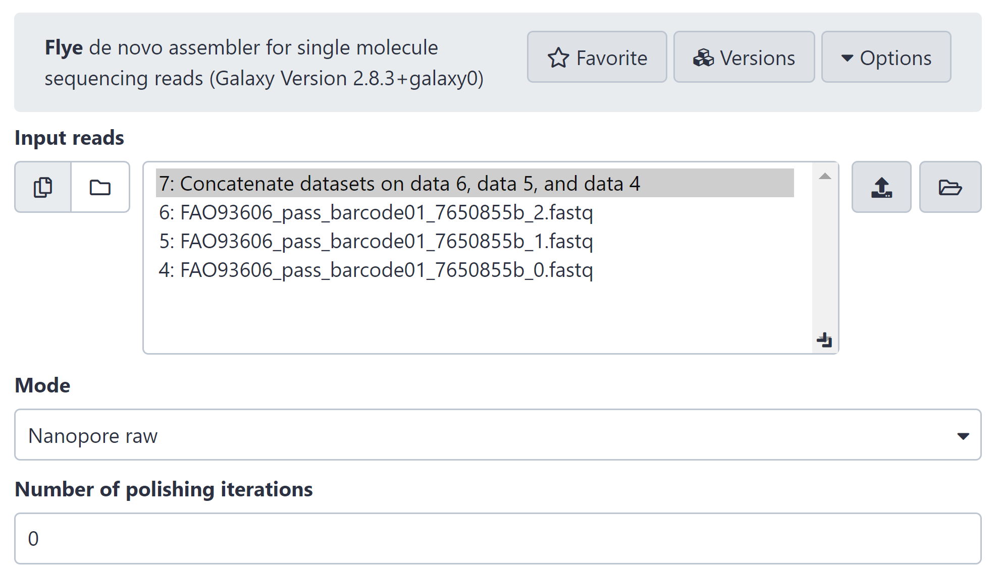
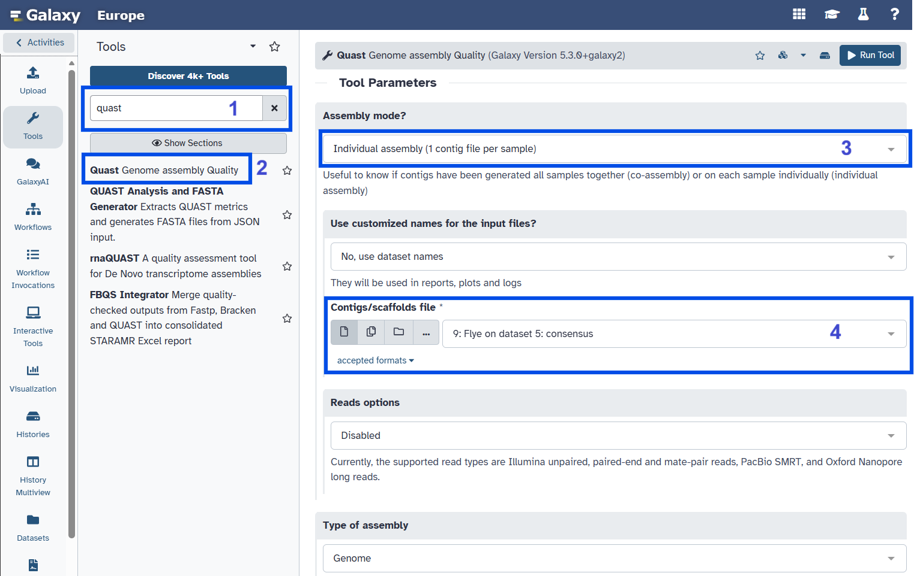
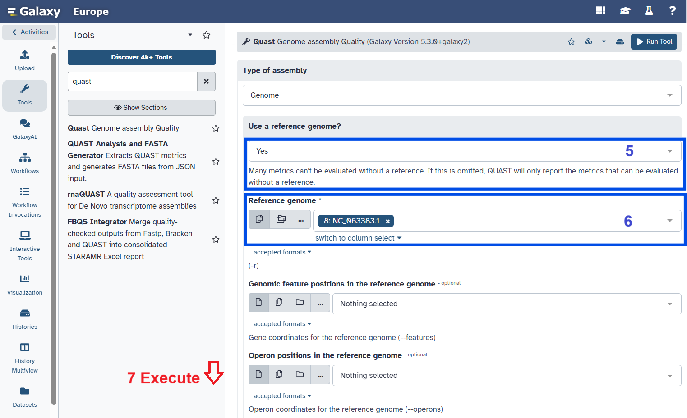
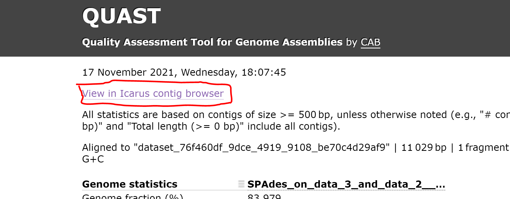
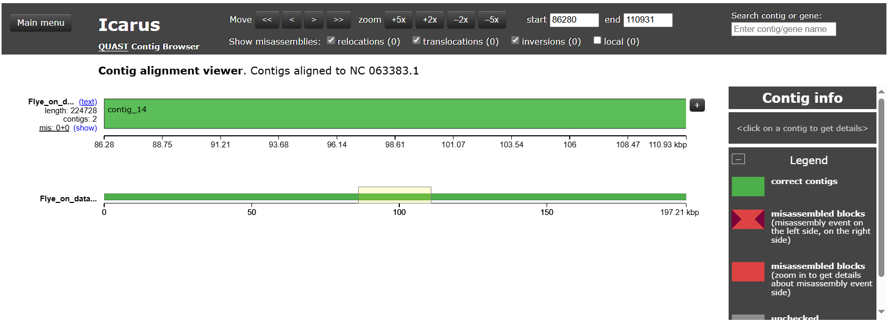

| Title | Galaxy |
|---|---|
| Training dataset: | Nanopore MinION Sequencing of a Monkey Pox Virus (MPXV) from Spain 2022 oubreak. Data is publicly available at SRA with the ID ERR10297654. You can check the paper here. |
| Questions: |
|
| Objectives: |
|
| Estimated time: | 40 min |
Oxford Nanopore sequencing is a third-generation sequencing technology capable of generating much longer reads than Illumina. However, read length and accuracy depend on library preparation, sequencing chemistry and basecalling methods. Each platform has distinct technical biases, which must be considered when choosing an analysis workflow.
In this tutorial, we will explore de novo assembly using Nanopore reads.
+ icon at the top of the history panel and create a new history with the name Nanopore assembly as explained here.SRA in the tool search bar and select Faster Download and Extract Reads in FASTQ format from NCBI SRA.ERR10297654.
NCBI using the search toolbox and select NCBI Accession Download Download sequences from GenBank/RefSeq by accession through the NCBI ENTREZ API.
Using SRA and NCBI API downloads data as hidden, so we will now unhide this data as follows:


Flye assembler using the search toolbox and select Flye - de novo assembler for single molecule sequencing reads.
Flye will generate four output files:
graph_dot format.

Click on the eye icon from the QUAST HTML report.
Open the Icarus viewer in the QUAST report.


This training history is available at: https://usegalaxy.eu/u/s.varona/h/nanopore-assembly-101-tutorial
Note
Nanopore data is known to have a higher error rate than short sequencing reads. This is why assembly post-processing is strongly recommended, usually using combined sequencing aproximation with both Nanopore and Illumina reads (hybrid assembly).